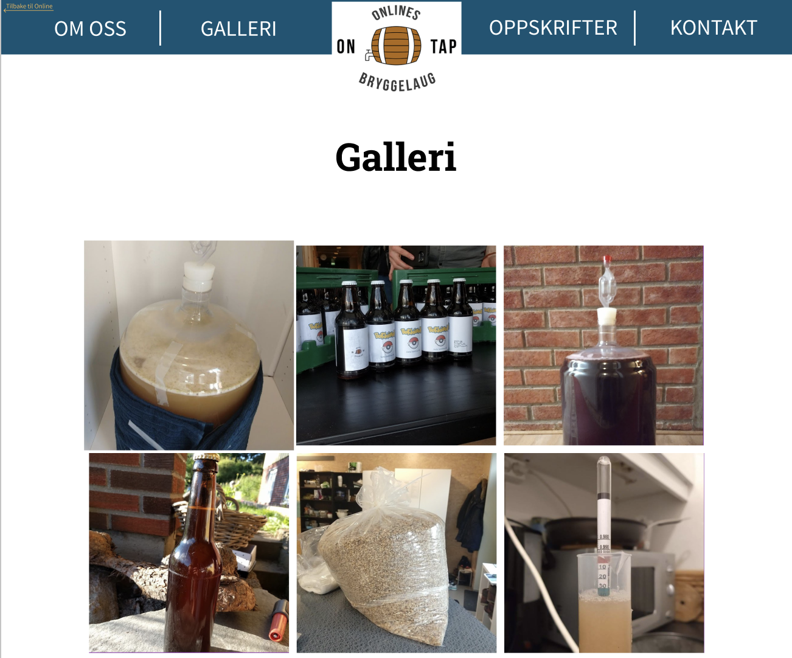

Prosjekt Innlevering P2
Dokument Detaljer
- Projekt Innlevering P2
- Laget av: Laget av Emil, Håvard, Mats, Tor og Una.
- Leveringsdato: 4. oktober 2020
Administrative Detaljer
- Klientens Navn: Hjalti
- Nettsidens Navn: Ontap
- Kontaktperson: Hjalti
Formål, Mål og Målgruppe
Målet med nettsiden er å være en informativ reklame slik at informatikkstudenter på NTNU er klar over tilbudet, og har en oversiktlig måte å ta kontakt. Dette skal vi utføre ved å ha et galleri, oppskriftsliste og infoside. Vi skal også ha en kontaktside som linker direkte til deres sosiale medier samt en epost sende funksjon slik at det er lettere for interesserte brukere å ta kontakt og finne ut mer om Ontap og eventuelt låne utstyr. Vi tenker også at nettsiden skal ha en tilbake lenke funksjon slik at man kan gå fra Ontap sin side tilbake til Online sin side. Brukerne skal være medlemmer av Ontap og informatikkstudenter som er interessert i å bli medlem av Ontap. De skal også ha mulighet til å kontakte Ontap om lån av bryggeutstyr. Hovedbrukeren er altså informatikkstudenter som vil brygge øl og bli kjent med andre som er interessert i det samme.
Navigasjonsstruktur
Brukerne skal kunne navigere til alle sub-nettsider fra forsiden og vice versa. Strukturen vil ha en clique som vist på bildet. Alle deler av nettsiden er tilgjengelig fra banneret og en tilbakelenke til Online sin nettside da det var noe klienten ville ha. Det vil være et sidekart tilgjengelig som linkes til i footeren for å gjøre oversikten enda tydeligere f.eks. for brukere som bruker teksttolker. Vi bruker en slik struktur slik at alle deler av nettsiden vil være enkelt tilgjengelig uansett hvor på nettsiden man er.

Layout
Design:
Målet med designet er å være oversiktlig og lett å navigere i. Designet skal etterligne Online linjeforening sin nettside for å gi brukeren en følelse av å ennå være i Online sitt domene. Med banneret og footeren vil alle deler av nettsiden være tilgjengelig uansett hvor på siden man er.
Fonter:
Online bruker Source Sans Pro og Source Serif Pro som vi vil også bruke i banneret. Tabene vil ha størrelse 40pt i banneret/navbar. For innholdet/knapper skal vi bruke fonten Roboto(30pt) og overskrifter vil ha fonten Roboto Slab (70pt) og være bold. Footer-teksten vil ha størrelse 25pt og være thin. Fontene vil ha svart farge(000000) utenom på banneret og knapper hvor de vil være hvite(FFFFF).
Farger:
- Navbar/banner: (0D5474)
- Footer: (F1F1F1)
- Bakgrunn: (FFFFFF)
- Oppskrift elementer: (F1F1F1)
- Online tilbakelenke: (FAB657)
Linker:
Banneret vil ha linker til alle deler av nettsiden og en logo som vil linke til startsiden. Det vil også være en hyperlink til Online i banneret som vil ha samme farge som Online sin logo. Footeren vil ha linker til kontaktsiden, Slack-kanal, epost og sidekart. Footeren vil også ha en link til toppen av siden.
Navbar(Banner)/Header:
Vil være på toppen av siden og vil følge viewporten nedover på siden. Skal følge standarden til online med lik farge(0D5474) og fonter. Når musen hoverer over overskriftene vil skriften bli understreket og uthevet.
Footer:
Laget av: (gruppemedlemmer), Kontakt (link til Kontakt-side), Ontap logo, link til sideoversikt. Width: 100%, height: 200px.
Logo:
Logo vil være plassert i sentrum av Navbar for å gjøre den lett synlig og tilgjengelig.
Knapper:
Knappene vil ha avrundede hjørner på 10px.
Innhold for Hver Side
Fremside
Tekst
Om Oss
Tekst
Kontakt
Tekst
Oppskrifter
Tekst
Galleri
Galleri-siden skal inneholde et utvalg av bilder som viser frem Ontap. Der er det blant annet bilder fra ølbryggingsprosessen og resultatene. Selve bildene på siden skal være like store kvadratiske thumbnails med størrelse 364px x 364px av bildene slik at siden laster inn raskt. På en standard skjerm skal bildene være i et 3 x 4(denne varierer med antall bilder. Foreløbig er det 10 bilder, dermed er det foreløbig 4 i y retning) grid, med avstand på 14px mellom thumbnailene og marg 10% på høyre og venstre side. Her er en mockup av hele galleri-siden:

Bildene skal øke med 18px (9 px i hver retning) i størrelse når musepekeren er over et bilde. Senterpunktet til bildet skal holde seg på samme sted når bilde øker i størrelse. Det skal ta et halvt sekund for bilde å øke i størrelse (dette kan hende endres senere). Her er et eksempel på dette:
Thumbnailsene skal linke til en visning av det originale bildet når man trykker på det. Bilde skal da vises i sitt originale oppløsning og størrelseformat. Rundt skal det være en ramme som er like høy som bildet, men er 130px større i venstre og høyre retning. Midt mellom kanten til rammen og bildet skal det være knapper for å gå til neste bilde på høyre og forrige bilde på venstre side. Knappene skal være midtstilt på y akse i rammen. Resten av siden utenom banneren får et mørkt filter or å sette bildet i fokus. Her er mockup av det:

Sidekart
Tekst
Minimumkrav Javascript
For å tilfredstille minimumskravene har vi disse Javascript-funksjonene:
- Verifisering av info i kontaktskjema:
- Alle felter må ha innhold
- Innført mailadresse må være på gyldig format (Har lokal prefiks, "@" og domene)
- Forstørre bilde i galleri når man trykker på det:
- Når du trykker på et bilde i gallerisiden skal det forstørres til original størrelse og legges foran resten av galleriet.
- Når bildet er i forstørret visning skal det også være piler som kan brukes til å bla til neste/forrige bilde og trykke utenfor visnings-rammen for å gå ut av forstørret visning.
- Alkoholkalkulator:
- Er i utgangspunktet skjult, men skal vises foran siden når man trykker på knappen på oppskrift-siden.
- Skal kunne regne ut alkoholprosent i ferdig produkt ved input av to verdier.
- Animert bilde på Om oss-siden:
- Vi skal ha et bilde på Om oss-siden som fungerer som et slags slideshow, her vil vi ha 3-4 fire bilder som går på rotasjon og byttes ut ca. hvert 5. sekund.
Planen Fremover
| Filnavn | Beskrivelse | Ansvarlige | Frist |
|---|---|---|---|
| startside.html | Startside | Håvard | 16.10.2020 |
| oppskrifter.html | Oppskriftsliste og alkoholkalkulator | Una | 16.10.2020 |
| kontakt.html | Oversikt over kontaktmåter og innsendingsskjema | Emil | 16.10.2020 |
| om_oss.html | Informasjon om hvem Ontap er og hva de gjør | Mats | 16.10.2020 |
| galleri.html | Galleri med bilder fra Ontap | Tor | 16.10.2020 |
| index.html | Sidekart | Håvard | 16.10.2020 |
| ontap_logo.png | Png av Ontap sin logo med gjennomsiktig bakgrunn | Tor | 10.10.2020 |
| alkoholkalkulator.js | Javascript som regner ut alkoholprosent i en øl utifra original gravity og final gravity | Una og Emil | 28.10.2020 |
| kontakt_verifisering.js | Javascript for verifisering av input i kontaktskjema | Emil | 28.10.2020 |
| galleri.js | Javascript som forstørrer bilder i galleriet når man trykker på dem, skal også kunne bla gjennom bilder i forstørret visning ved hjelp av to knapper | Tor og Håvard | 28.10.2020 |
| slideshow.js | Javascript som skifter ut bildet på Om oss-siden med jevne mellomrom, skal rotere gjennom 3-4 forskjellige bilder | Mats | 28.10.2020 |
| stylesheet.css | css fil for stil av hele nettsiden | Alle | 28.10.2020 |
| Endelig kontroll | Kontroll av alle filer og funksjoner for å forhindre feil. | Alle | 01.11.2020 |